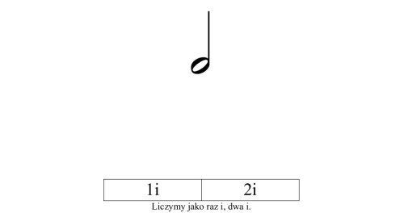
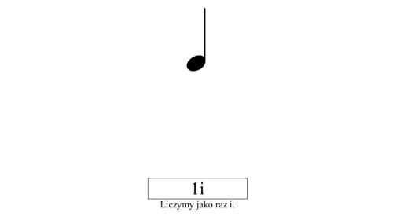
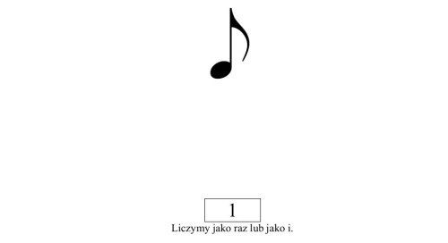
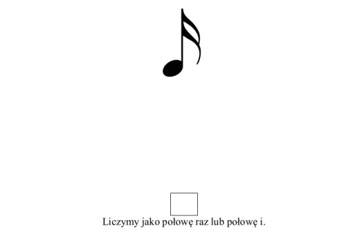

Podstawowe wartosci rytmiczne nut
Nuta to symbol graficzny dzwieku muzycznego. Nuta okresla d³ugosc trwania dzwieku (d³ugosci to wartosci rytmiczne) oraz jego wysokosc. Najbardziej podstawowe nuty to: cala nuta, polnuta, cwiercnuta, osemka, oraz szesnastka.
Cala nuta
Cala nuta jest najdluzsza wartoscia rytmiczna, liczy sie ja do 4i i okresla ponizszym symbolem:

Polnuta
Polnuta jak sama nazwa wskazuje jest to polowa calej nuty czyli liczymy ja do 2i. Polnute okresla ponizszy symbol graficzny:

Cwiercnuta
Cwiercnuta jest to polowa polnuty lub jak ktos woli cwiartka calej nuty. Cwiercnute liczymy do 1i, reprezentuje ja ponizszy znak graficzny:

Osemka
Osemka najprosciej powiedziawszy jest to polowa dlugosci trwania cwiercnuty, liczymy ja do 1 (teraz bez i, 1i bylaby to dlugosci trwania cwiercnuty). Osemke reprezentuje ponizszy symbol graficzny:

Kilka osemek wystepuj¹cych po sobie mozemy zapisac w uproszczonej postaci:

Powyzszy rysunek prezentuje 4 osemki nastepujace po sobie, liczymy je jako raz i, dwa i. Czyli w sumie te 4 osemki trwaja tyle co polnuta.
Szesnastka
Szesnastka jest jedna z najkrotszych wartosci rytmicznych, trwa tyle co polowa osemki. Trudno jest powiedzieæ jak ja policzyc, musimy to po prostu wyczuc w muzyce. Z czasem grajac inne wartosci rytmiczne nauczymy sie wyczuwac dlugosc szesnastki. Szesnastka ma nastepujacy symbol graficzny:

Kilka szesnastek wystepujacych jedna za druga rowniez mozemy zaprezentowac w uproszczonej postaci:

Pamietajac o tym, ze jedna szesnastka trwa tyle co polowa osemki, mozemy latwo policzyc, ze 4 szesnastki trwaja tyle co jedna cwiercnuta. Czyli 4 szesnastki liczymy jako raz i.
|